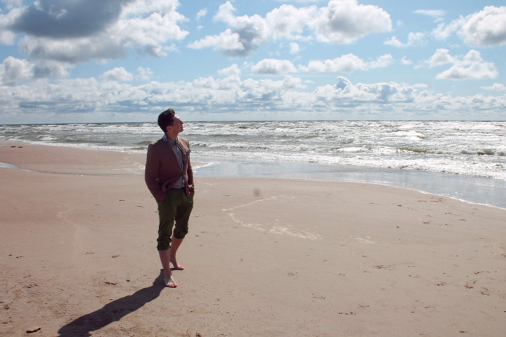
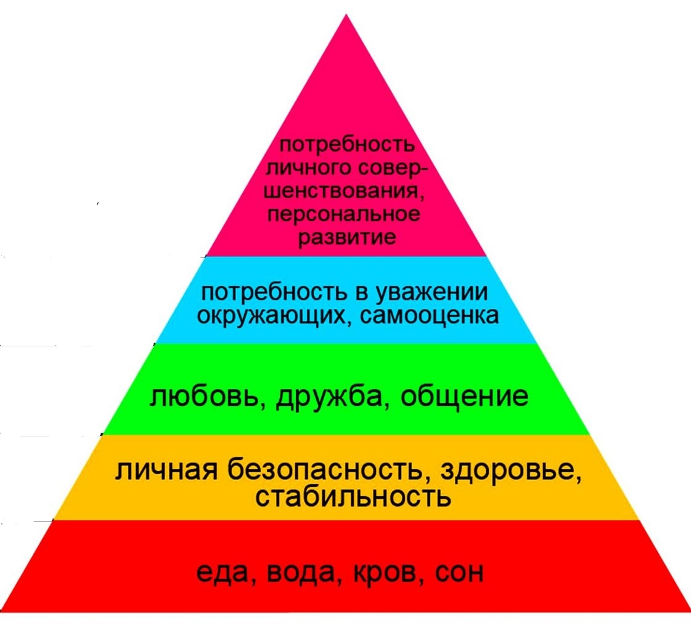
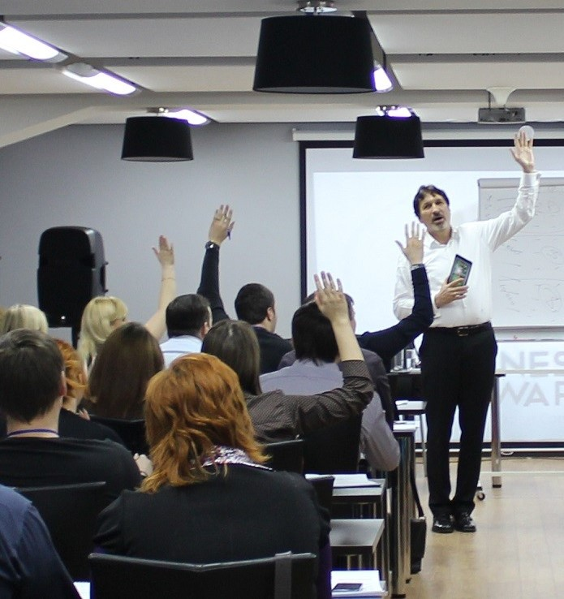

Меня зовут Борис Потапов. Я дипломированный психолог и исследователь, работающий в Национальной Академии Наук РБ. В своей работе я помогаю с проблемами в личной жизни, внутренних и внешних конфликтов, преодоления крийзисных периодов в разных возрастах, самореализации и саморазвития, межличностных отношений, постоянного состояния стресса и психологического напряжения, тревоги, депрессии. Основываясь на своем опыте работы я могу сказать, что все эти проблемы могут быть решены если Вы действительно готовы к переменам.
 Каждый человек это неповторимое сочетание опыта, потенциала, интересных личностных особенностей. Я помогаю увидеть Ваши сильные стороны, которые сделают Вас тем, кто необходим окружающим людям. Во время встречи, мы уделим время тому, как справляться с проблемными ситуациями, которые вас беспокоят, учитывая особенности Вашего характера и привычек. Поверьте, далеко не всегда необходимо кординально менять себя, что бы достич той цели. Инога достаточно сделать необходимый акцент на сильных сторонах себя что бы в Вас увидели потенциал.
 Саморазвитие - та потребность, которая в пирамиде Маслоу занимает высшую ступень. Какой потенциал нашего развития? Что происходит с возрастом и влияет ли возраст на способность к обучению? Ответить на эти вопросы кратко не представляется возможным, так как этим занималось большое количество ученых, которые выделили строгую динамику развития человека. Действииельно, возраст привносит некоторые ограничения в процесс обучения. Память, внимание, мышление и другие функции с возрастом могут ухудшаться. С другой стороны у нас появляются новые цели, которые характерны только вашему возрасту, что может придать отличный мотивирующий эффект в обучении. Для того что бы развиваться правильно необходимо учитывать все особенности человека и придерживаться "учебной диеты" и тогда Вы достигните необходимого результата. Об этом вы можете узнать тут...
 Сложно представить современную компанию, которая занимается бизнесом и не заботиться о развитии своих сотрудников. Иногда развитием работников отдела занимаются более опытные коллеги. Они делятся опытом, знаниями, навыками, секретами. Такие способы обучения очень эффективны и дают результат в кратчайшие сроки из-за того, что полученные знания касаются строго определенного круга потребностей клиентов компании. Но к сожалению, этот метод будет работать не так эффективно с компаниями, предоставляющими услуги напрямую для потребителей, которые не являются постоянными клиентами. В таких случаях важным фактором является личность менеджера, консультанта, продавца и его способности к сохранению профессиональной этики в множестве сложных эмоционально напряженных сиуаций в течение рабочего дня. Я разработал тренинги, которые способствуют выработки автоматического алгоритма действия персонала, работающего с новыми клиентами. Ваши сотрудники в течение нескольких минут смогут определять психологический портрет клиента и методы, которые будут способствовать расположению его к покупки. В разделе тренинги и семинары вы найдете информацию более подробную информацию о тренингах.
Если задаться целью и пересчитать сколько раз за день мы обращаемся за помощью и советом к друзьям, знакомым, коллегам, интернету, родителям, то ,скорее всего, Вы даже не вспомните и десятой части этих случаев. Сложно признаться себе, но мы остаемся беспомощьными в любом возрасте и это нормально. Жизнь слишком сложна для того что бы научится делать все. Упростить ее можно только огородив себя от информации, что в виртуальном мире уже невозможно. Когда нам нужна что бы починить автомобиль, или разобраться с сложными законами мы не стеяняясь обращаемся к специалисту, а когда нам необходимо разобраться с сложными чувствами мы можем это проигнорировать и оставить на потом. В результате мы накапливаем сложные эмоции, причину которым мы уже и не вспомним без помощи специалиста. Мы не редко ловим себя на мыслях: "... Почему они так могут, а я не могу?", "...Откуда у меня это чувство, которое меня беспокоит?", "...Почему я такой?". Психолог с высоким уровнем подготовки поможет разобраться с тем, откуда появляются эмоции и чувства, которые мешают достигать поставленных целей. Стоит просто попросить помощи.